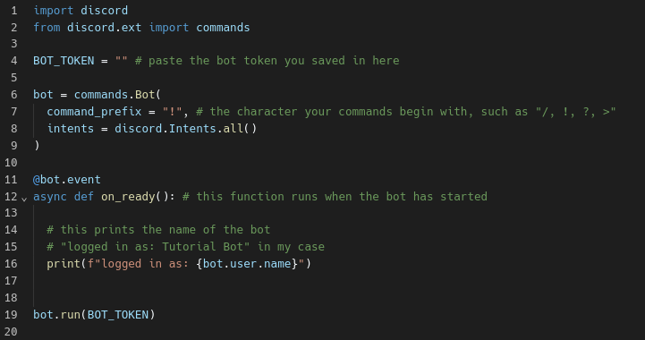

Welcome to the first article published on this website!
Do you want to create your very own Discord bot? Well, I hope this tutorial will help you get started in no
time!
If you don't know what a Discord bot is, I'll explain it briefly for you:
A Discord bot is an account controlled by a program. It's often used for automating tasks, such as moderation. But
it can be used for a lot more than that! In this tutorial, I'll help you make your first Discord bot. The bot
we'll be making is a "ping bot", which is a bot with a command. When that command is run, the bot gives a response
message. Pretty simple, but enough to get you started.
For this tutorial, I'll assume that you have some basic knowledge of the Python programming language. If you don't
know anything about Python or programming in general, I highly suggest that you learn before attempting this.
Hint: You can check out the Python documentation or this tutorial made by @BroCodez on youtube for quick guides on Python.
Creating the bot account is very easy. I'm sure that some of you have already done that by now. If you want to
save some time, you can click this link to skip to the coding part.
The first step is to navigate to Discord Developer
Portal. After that, look for the "Applications" button and click it. Next, press the "New Application"
button, and give your app any name, agreeing to the terms of service.
Great! You have now created your bot! But we're not done yet. You still have the ultimate challenge of clicking your mouse four times (so scary)! So what you're going to do is navigate to the "Bot" section and scroll down to the "Privileged Gateway Intents." You now have to use your last three clicks to turn on the three sliders. You're now only one step away from being able to start coding.
The last step in configuring your bot is to get the token. A token is almost like a username and a password
combined; therefore, do not share it with anyone. With the token, you can do almost anything you want with your
bot. To find your bot token, scroll up to the top of the bot section, and there will be a "Reset Token" button.
Click the reset button and enter the authentication details. Then save that token somewhere safe because we will
use it later.
Inviting the bot to your server is crucial for testing purposes. It's extremely simple. Start by navigating to the "OAuth2" tab. Scroll down to the OAuth2 URL Generator, check the "Bot" checkbox. Then scroll down further and select what permissions you would like your bot to have. I usually select Administrator for testing purposes, but when I'm ready to use it publicly, I avoid using administrator permissions for safety reasons. The last step is to visit the link and select your testing server.
Adding Some CodeNow that you have created a bot account, it's time to add some code to make it do something. Open up your favorite Python IDE and write these few lines of code:
Great! Your bot is now set up and... not really doing anything else. Let's fix that. As I said before, we will be making a ping bot. To make your bot do something when it has started, you can add the "@bot.event" decorator, followed by a new line and "async def on_ready():".
Now that you have set up the basics for a bot, I think it's time to move on to making commands. It's a process very similar to the on_ready() function. All you have to do is add a "@bot.command()" decorator, followed by a new line and "async def [your command name](ctx):" followed by your logic. In our case, we will use the "ctx.send()" function to send a response message.
Now you are fully set up! You can test your bot by simply typing the command in a server where your bot is invited.
Thank you for reading this article; it means a lot to me! If you have any feedback, you can join my Discord server in the #server-or-website-suggestions channel, or leave a comment on one of my videos.